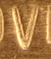
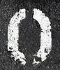
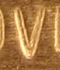
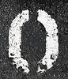

What Is ?
- 社会化图片分享服务!
- 免费，工具上传，每月限制流量，TAG方式管理图片;
- Flickr太好玩!
- 1. Press Clipping 剪报
- 2. 名片盒
- 3. 找Wallpaper
- 4. Photo Blog 使用照片来Blogging
- 5. 講故事
- 6. 遊記
- 「Words from Flickr」图片文字
 



国内已经有仿制服务:
更多有意思的 SNS..
- del.icio.us 美味书签
- + +Orkut ... Google 提供的豪华社交网路
- Wealink 个人终身通讯簿
- spaces+MSN M$ 的易用个人门户
- Wallop “我老婆”! M$ 纯Flash 的超 Cool 个人SNS空间
-
 我的豆瓣 以书评和影评为中心的SNS
我的豆瓣 以书评和影评为中心的SNS
- .....
奥苏贝尔论认知结构

- 个人的认知角度来分析知识管理的途经
知识陀螺！

- 隐性知识 （Tacit Knowledge）：
难以结构化表达的知识 - 显性知识（Explicit Knowledge）：
可以清晰结构化表达的知识
- 隐性知识 （Tacit Knowledge）：
知识管理陀螺

知识分享的原理

- 我们永远处于无边未知世界的包围中！
知识分享的原理

- 出于 对未知的天生恐惧，我们不断的学习！扩大自个儿的知识范围！
- 但是直接的结果是我们感受到更多的未知世界 --- 知识边界周长扩大了！
知识分享的原理

- 只有分享，联合，我们大家的知识边界才会有飞跃样的扩展!
- 而且知识兴趣的重叠，只会得到加强，令求知路上不寂寞...
 S5
S5 Leo
Leo